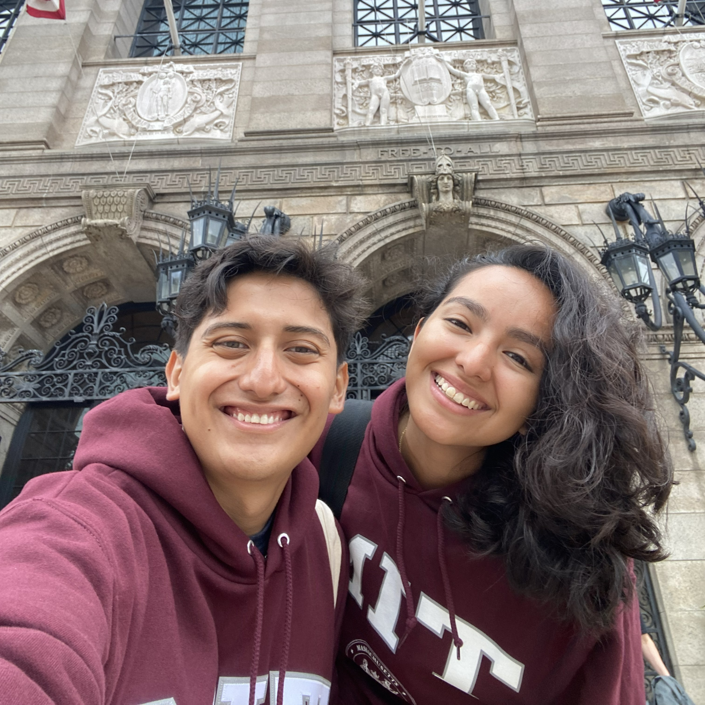
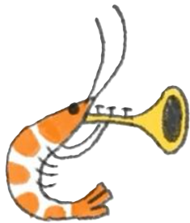
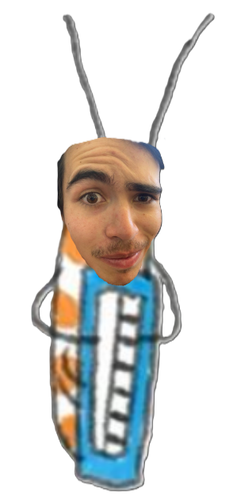
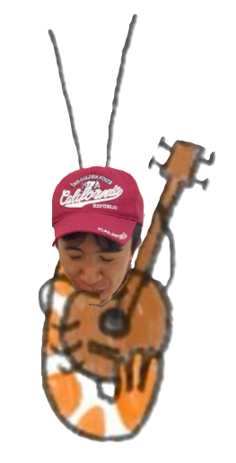
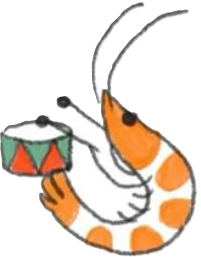
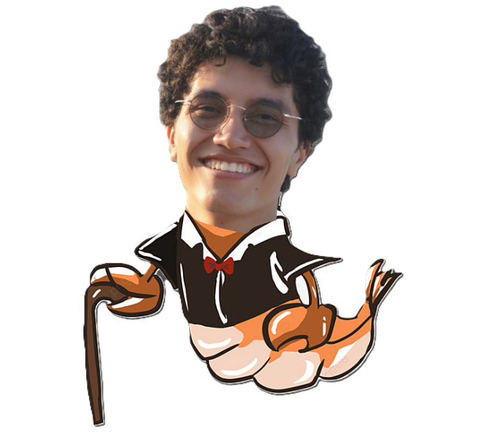

About Me

Rodríguez Cancino Derek
ingeniería mecatrónica
201265@iberopuebla.mx
Hola, mi nombre es DereK Rodriguez Cancino. Acutalmente estoy estudiando el 5to semestre de ingeniería en mecatrónica en la IBERO Puebla. Nací y crecí en la ciudad de Oaxaca, Mexico, estoy tomando el curso de proyectos IV, el cual ayuda a derarroyar habilidades de diseño, negocios e implementación de AI.




